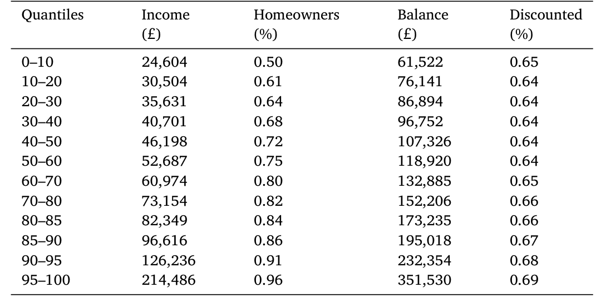
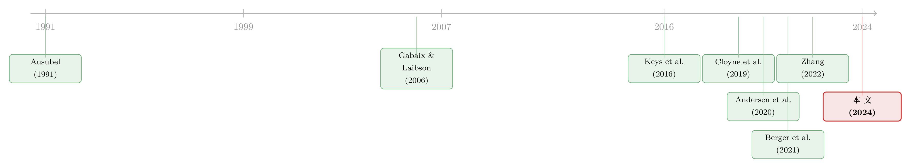

谁在替谁还房贷？——把按揭市场里那笔「看不见的补贴」算出来
本文读的是 Fisher, Gavazza, Liu, Ramadorai & Tripathy (2024, Journal of Financial Economics)：在英国「双利率」按揭市场里，那些没能及时再融资的家庭，正悄悄地为及时再融资的家庭买单。作者用一个家庭再融资的结构模型，在覆盖全英按揭存量的行政数据上把这笔「看不见的交叉补贴」算了出来——它从相对更穷的家庭、更贫困的地区，流向了更富的家庭和更富庶的地区。换句话说，按揭合约的设计本身，正在加剧财富不平等。
1 一个让人不舒服的问题
先讲一个你大概率经历过、却从没认真想过的场景。
你签了一份房贷。前两年利率很低，叫「折扣利率（discounted rate）」。两年一到，如果你什么都不做，银行会自动把你切换到一个明显更高的「重置利率（reset rate）」——在英国它有个更официальное的名字，叫「标准浮动利率（standard variable rate）」。想躲开它也不难：只要在折扣期结束时及时去办一次再融资（refinancing），重新签一份折扣利率合约就行。没有额外的征信审查，前期费用还能并进贷款本金里，连流动性约束都谈不上。
于是问题来了：既然办再融资几乎是「免费的午餐」，为什么还有那么多人没去办？
数字是惊人的。在作者使用的 2015 年上半年英国按揭存量里，总规模 £470 billion，其中 65% 仍在享受折扣利率，但剩下 35% 已经滚到了更贵的重置利率上——折扣利率加权平均 320 bps，重置利率加权平均 372 bps，两者相差 52 bps。这不是一个小数目，而且涉及的人群相当庞大。
接着，一个自然的问题是：这 35% 多付的钱，去哪儿了？
银行不会把它扔进海里。在一个竞争性的按揭市场上，给「及时再融资」的活跃客户开出的低折扣利率，恰恰是靠着「没及时再融资」的不活跃客户多缴的那部分撑起来的。这就是本文的题眼——交叉补贴（cross-subsidy）：不活跃的家庭，在不知不觉中补贴了活跃的家庭。
这个直觉并不新鲜。从信用卡（Ausubel, 1991）到电费、话费套餐，零售金融市场里到处都是「给新客户/活跃客户打折、让老客户/惰性客户埋单」的定价结构，理论上也早有人指出它可能是累退（regressive）的（Gabaix and Laibson, 2006；Armstrong and Vickers, 2012）。真正困难的，从来不是「有没有」交叉补贴，而是——到底有多大？流向了谁？
本文的全部功夫，都花在了回答这一个问题上。
2 为什么不能直接「数」出来
你可能会说：这还不简单？把没再融资的人多付的钱加总起来，不就是补贴总额吗？
这恰恰是作者反复强调【不能这么做】的地方。一个纯粹的「拿观测数据做反事实对比」的简约式（reduced-form）思路，至少在三件事上会栽跟头：
第一，「不办」未必是「忘了办」。 一个家庭迟迟不再融资，可能是因为它的贷款余额本来就小、剩余期限本来就短，再融资省下的那点钱根本盖不住麻烦——这是理性的财务计算；也可能是它确实存在某种实打实的、或者心理上的「办事成本」。简约式方法无法把这两种动因拆开，而它们对「福利水平」和「福利分布」的含义截然不同。
第二，合约一换，需求也会变。 如果把双利率合约换成一份从头到尾只有一个利率的简单合约，家庭会重新优化自己的贷款规模，甚至重新决定「到底买不买房」。要预测这种反应，就必须把家庭对住房的估值（valuation for housing）也建进模型里。
第三，这是个「非边际」的反事实。 换合约结构不是在原有均衡上挪动一小步，而是整个游戏规则的改变。简约式的弹性外推在这种地方不可靠，而结构模型（structural model）天生就是为评估这类大改动准备的。
这也是这篇论文方法论上的核心立场：要测量「看不见」的交叉补贴，光靠看得见的数据不够，你得先写下一个家庭如何做再融资决策的模型，估计它，再用它去跑那个现实中并不存在的「单一利率世界」。
于是，真正关键的一步，是把「再融资决策」写成一个可以估计的结构模型。
3 模型：一笔账，两种异质性
模型的骨架其实非常符合直觉。所有家庭一开始都在折扣利率上。折扣期一结束，家庭就要做一道算术题：再融资省下的钱，够不够付再融资的成本？
省下的钱，主要由两样东西决定：重置利率与折扣利率之差 (r^R − r^D)，以及未偿贷款余额 B。差额越大、余额越大，省得越多。这立刻给出一个重要推论——大额贷款更值得再融资。在横截面上，大额贷款对应着对住房估值更高的家庭；在时间序列上，它们对应着新近才办过按揭的家庭。
成本这一端，作者做了一个细致的设定：再融资成本由两部分组成，一个家庭层面【持久的】成分，外加围绕它的【临时性】波动或冲击。持久成分刻画了不同家庭在打理这件事上的系统性差异（与收入、信息水平相关）；临时冲击则捕捉了「某一期就是恰好没空、没顾上、办不动」这种惰性与走神（inertia and inattention）。更妙的是，家庭在【买房当下】决定贷款规模时，对自己未来「能不能及时再融资」只有一个带噪声的预判——这就把「人对自己其实没那么了解（imperfect self-knowledge）」也写了进去。
如果把这道算术题写成一条决策规则，它的经济内核大致是这样：
这条不等式是为了把论文模型的【经济逻辑】讲透而写的、带定义的表达式（符号由我在正文中定义）；论文 Section 3 给出的是更完整的结构设定与值函数。这里的重点是抓住一件事：是否再融资，由「收益（随余额放大）」与「成本（持久＋冲击）」的赛跑决定。
家庭的第二个异质性维度——对住房的估值——则负责另一件事：让模型能匹配存量按揭里真实的【贷款规模分布】（把租房作为外部选项）。两个维度合在一起，模型就既能复现「谁的贷款大、谁的贷款小」，又能复现「谁及时再融资、谁滚到了重置利率」。
这套设定还有一个被作者反复利用的好处：模型很容易把家庭层面的贷款【加总】，从而写出「停留在折扣利率上的总余额」和「停留在重置利率上的总余额」的解析表达式。正是这一点，让他们能拿模型去精确匹配数据里的一组矩（moments）。
4 数据：为什么是英国
要把这套模型估出来，你需要一份「能看见每一笔按揭」的数据。英国恰好提供了一个近乎完美的实验室。
数据来自英国金融行为监管局（Financial Conduct Authority, FCA）的 PSD007（Product Sales Database 007），它逐笔追踪了全英所有受监管金融机构发放的、仍在存续的按揭贷款，频率为半年一次，区间从 2015 年上半年到 2017 年下半年。观测单位是【每一笔按揭】，每个报告日都记录原始贷款额、未偿余额、原始期限、剩余期限、当前利率、当前月供、违约状态，乃至 6 位邮编级别的房产位置和借款人出生日期。PSD007 本身不含收入，作者再把它与放款时披露的借款人收入等特征做了合并。
英国之所以理想，有几个制度性的原因：
- 全国统一定价。 利率在全国张贴，没有跨地区差异，更没有美国那种逐个借款人议价的做法（Cloyne et al., 2019；Benetton, 2021）。这意味着「谁付得多」几乎只取决于「谁没及时再融资」，而不是「谁议价能力差」。
- 双利率结构普遍存在。 折扣期通常 1–5 年（最常见是 2 年），折扣期内提前还款罚金高达本金的 3%–5%，所以家庭基本都是在折扣期结束时才再融资。这种结构在加拿大、澳大利亚、印度、爱尔兰、德国、西班牙也很普遍，让结论有了更广的适用性。
- 可携带性（portability）。 英国按揭可以「带着走」，搬家不必换贷款，这就把美国研究里那个挥之不去的「搬家概率」混淆项（confounding moving propensity）几乎抹掉了——而在美国，由于不可携带，搬家概率是提前偿还/再融资的重要驱动（Stanton, 1995；Zhang, 2022）。这一点也正是它与美国「房贷利率锁定」叙事的分野（关于后者，可参见《被自己 3% 的房贷「锁」在原地：当利率掉头向上，美国人为什么不搬家了》）。
作者还做了一道关键的【样本清洗】：把「想再融资却没资格」的人剔除出去。依据是 FCA 与 2018 年覆盖 65 家、约 95% 市场份额的英国放贷机构达成的统一资格标准——只要是首押自住、在贷机构的存量客户、还款不逾期、剩余期限至少 2 年、未偿余额至少 £10,000，就能无须负担能力评估地再融资。把不满足这些条件的「非自愿停留在重置利率」的人滤掉之后，剩下的，才是真正「能办却没办」的人。这一步极其重要：它把「不会办」从「办不动」里干净地分了出来。
下面这张表给出了清洗后 2015H1 样本、分收入组的关键统计量，也正是估计模型时要去匹配的那组矩。

Table 2: shows summary statistics across quantiles of the income
几个值得记住的数字：折扣利率上的平均未偿余额 £140,647，重置利率上 £112,692，全样本放款时平均贷款额 £142,333；折扣利率贷款的平均剩余期限 20.6 年，重置利率上只有 16.8 年——后者是更老、余额更小、再融资动力更弱的贷款。平均剩余折扣期 2.1 年。
5 估计结果与那个反转
模型在稳态假设下估计，对数据拟合得相当好。先看一个总量上的「定价标尺」：
估计出的【平均再融资成本】为
£4042，标准差高达£15,102。
这个数比文献里的同类估计都要大——Andersen et al. (2020) 在丹麦市场估出的「心理＋固定」再融资成本约 £1,852，Berger et al. (2021) 在美国估出约 $1,934。作者解释说，差异部分来自建模方式：Andersen 等人用的是「固定再融资成本＋时间依赖的不作为区间（Calvo 冲击）」，而本文用的是「家庭特定的固定成本＋时变冲击」，因此能恢复出【整个】成本分布——既跨家庭，也跨时间。再加上这里的 £4042 是对再融资者与非再融资者一起算的平均，自然偏高。
然后，把估好的模型扔进那个并不存在的「单一利率世界」：假设全程只有一个利率，等于样本的加权平均利率，不需要任何再融资。会发生什么？
- 总按揭债务上升
3.55%。 主要由高再融资成本的家庭贡献——他们不再被惩罚性的重置利率和再融资成本卡住，于是更愿意进场。 - 但平均初始贷款余额反而下降了基准均值的
2.85%。因为进场的边际家庭，贷款规模比那些本来就在场的「内边际」家庭要小，borrower 构成被稀释了。 - 消费者剩余（consumer surplus）总体上升
4.14%，且低收入家庭的剩余增加更多。
最关键的分布结果是：在单一利率反事实下，高收入家庭（以及更富庶的英格兰西南部）会付更高的利率，低收入家庭（以及相对更穷的东北、西北部）会付更低的利率。这等于直接证明了：现行双利率制度里，钱是从穷人流向富人、从穷地区流向富地区的——一种【累退】的交叉补贴。作者还观察到一个「按揭民主化」现象：取消双利率后，住房自有率上升，主要由低收入家庭进场驱动。
但真正精彩的，是落在福利账上的【反转】。
低收入家庭在现状里吃亏，并不是因为他们「更笨」——而是因为他们贷款余额小，再融资省的钱本来就少，理性上不值得去办。高收入家庭再融资更勤，恰恰是因为他们贷款大、收益大，尽管他们为此付出了【更高】的再融资成本。于是在单一利率世界里，高收入家庭一边要付更高的利率、贷款余额还缩水，另一边却省下了那笔高昂的再融资成本——算总账，省下的成本「过度补偿」了多付的利率。结果是：所有收入组的消费者剩余都增加了，没有谁因为废除双利率而变差。
这让本文的结论变得很微妙，也很诚实：交叉补贴是累退的、不公平的；但废除它，并不是一场「劫富济贫」的零和游戏，而是一次帕累托意义上的普遍改善——只不过穷人得到的更多。这种「把惰性与走神的福利代价算到每个人头上」的思路，和最优默认设计、注意力监管那条线索是相通的（可参见《把「健忘的人」推出门：一场关于默认选项的监管实验》与《最优的「锁」：一笔退休金，应该有多难取出来？》）。
6 文献脉络
把这篇论文放回它生长的土壤里，线索其实很清晰。
最上游，是关于【转换成本、惰性与走神】的一大片实证文献——信用卡里的 Ausubel (1991)、健康保险里的 Handel (2013)、车险里的 Honka (2014)、养老金计划里的 Luco (2019)。这些研究反复证明：消费者远没有教科书假设的那么「警觉」。与此并行的，是把这种惰性可能导致【累退交叉补贴】写成理论的工作——Gabaix and Laibson (2006)、Armstrong and Vickers (2012)。但理论归理论，没人真正去量过这笔补贴的大小和流向。

接着，文献聚焦到了按揭再融资的不作为上：Agarwal, Rosen and Yao (2016)、Keys, Pope and Pope (2016) 用美国数据反复确认，低收入、低教育的家庭在「及时再融资」这件事上做得更差。再往后，结构建模登场——Andersen et al. (2020) 在丹麦市场、Berger et al. (2021) 在美国市场，分别用各自的方式给「不作为」建模。然后，分布视角浮现：Zhang (2022) 指出美国那些不预付「points」的借款人在现状下最吃亏，Berger et al. (2023) 则在美国市场内生化了按揭利率。
本文站在哪里？它在英国这个「全国统一定价＋双利率＋可携带」的干净环境里，第一次用结构模型给出了交叉补贴的【货币化测量】，并把它在收入组与地区之间的【分布】刻画了出来。它还把这条线索接到了财富不平等（Alvaredo et al., 2017；Benhabib and Bisin, 2018；Fagereng et al., 2020）和【区域再分配】（Hurst et al., 2016；Beraja et al., 2019）两条大文献上——并指出了一个新颖的机制：地区间的再分配，可以仅仅因为大家「使用金融产品的效率不同」而直接发生。
7 评论与延伸（Q&A + 研究方向）
(a) 几个可能的疑问
Q：「交叉补贴」和单纯的「价格歧视」有什么区别？
价格歧视（如 Allen and Li, 2020；Thiel, 2021 关注的）是对【同一个借款人在不同时点】收不同的价（跨期）。本文关注的是【横截面上不同借款人之间】的隐性补贴：活跃者享受的低价，由不活跃者的高价撑起。前者是「时间维度」，后者是「人群维度」，这正是本文的新角度。
Q：£4042 的平均再融资成本，会不会被高估了？
它确实显著高于丹麦（£1,852）和美国（$1,934）的估计。但这个差异主要是建模口径造成的：本文恢复的是「家庭特定固定成本＋时变冲击」的【完整分布】，且 £4042 是对再融资者与非再融资者一起算的平均；标准差高达 £15,102 也说明这是一个极度右偏、异质性巨大的分布，而非一个代表性家庭的「真实账单」。
Q：用「存量」而不是「新发放流量」来估，有什么讲究？
存量能覆盖所有期限、所有年份发放的按揭，从而准确刻画跨期限的再融资行为；用存量估出的结构参数，也更少受到某段短期内再融资潮汐的扰动；而且只有用存量，才能算出平均利率和总放贷收入——这正是计算交叉补贴所必需的。多数英国按揭研究盯的是新发放流量，本文盯的是存量。
Q：「废除双利率人人变好」会不会太乐观了？供给侧去哪了？
这是本文最该被追问的地方。作者自己承认，相比 Berger et al. (2023)，本文是「需求侧详细、供给侧从简」。单一利率被直接设为样本加权平均利率，银行的定价反应、利润约束、竞争结构基本没有内生化。如果废除双利率会逼银行普遍抬高那个单一利率（毕竟它们失去了从惰性客户身上赚钱的渠道），福利结论可能要打折扣。
Q：把不合资格的借款人滤掉，会不会把结论「洗」得太干净？
这一步是为了区分「不会办」与「办不动」，方向上是对的。但资格标准来自 2018 年的行业协议，而样本始于 2015 年；用事后的资格线去切事前的样本，边缘人群的归类可能有误差。好在覆盖了 95% 市场份额的统一标准，使这种误差大概率不大。
Q：英国的结论能搬到美国或公司债市场吗？
英国的可携带性和全国统一定价是「优点」，也是「特例」：它剥离了搬家概率和议价能力两个混淆项，但也意味着结论不能直接套到美国（不可携带、逐人议价）。不过双利率结构在加拿大、德国、澳洲等地普遍存在，这套方法的【框架】是可迁移的——真正的限制在数据，而非思想。
(b) 几个可能的研究问题与提案
1. 把这套「交叉补贴」框架搬到公司债的「老券 vs 新券」上。 【经济故事】二级市场上，被动持有到期的「老券」投资者，是否在为频繁换券、抢新发的活跃机构买单？流动性溢价的累退性，可能在信用市场里也存在。 【可行性】中。需要 TRACE 逐笔成交＋持有人数据（如 eMAXX/Lipper），识别策略可借鉴本文的结构思路，但公司债没有「双利率」这种干净的制度断点，识别更难。
2. 把供给侧内生化，重做福利账。 【经济故事】本文「人人变好」的结论高度依赖单一利率被外生设定。若让银行在失去惰性收入后重新定价，反事实利率会内生上移，福利分布可能改写。 【可行性】中。可在本文模型上叠加一个 Bertrand 或 Robles-Garcia (2022) 式的供给侧；数据已有，难点在均衡求解与识别供给侧成本参数。
3. 外资/机构持有人是否改变了交叉补贴的流向？ 【经济故事】当按揭被打包成 MBS 卖给海外机构投资者，「谁补贴谁」就不再只是借款人之间的事——惰性家庭的高利率，可能跨境流向了外国资本。 【可行性】低到中。需要把 PSD007 与 MBS 持有人数据打通，跨境匹配极难，但若能做成，会是「家庭惰性 → 财富不平等」链条上一个全新的国际维度。
4. 用区域异质性识别「金融素养」的因果效应。 【经济故事】本文发现东北、西北部家庭再融资更差。若能找到一次区域性的金融教育或提醒干预，就能识别「素养/注意力」对再融资行为的因果作用。 【可行性】中。需要一个区域层面的政策冲击（如某地的强制再融资提醒），配合 PSD007 做双重差分；英国有 FCA 的多次干预，存在可利用的事件。
5. 跨国比较：可携带性如何改变交叉补贴的规模？ 【经济故事】英国可携带、美国不可携带。同样的双利率，可携带性会不会系统性地放大或缩小交叉补贴？这能把「制度设计 → 不平等」的因果说得更硬。 【可行性】低。需要至少两国可比的存量按揭微观数据，跨国数据可得性是最大瓶颈。
8 我的判断与参考文献
贡献。 这篇论文最漂亮的地方，是把一个长期停留在「理论上可能存在」的概念——累退的交叉补贴——变成了一个可以【货币化、可以分组、可以画出流向】的对象。它选对了战场（英国的制度特征近乎为这个问题量身定做），用对了工具（结构模型而非简约式），并得出了一个既不平淡也不偏激的结论：补贴是累退的，但废除它能让所有人都变好、让穷人变得更好。这种「诚实的微妙」，比一个简单的「劫贫济富」标题更有说服力。
对识别的担忧。 我最不放心的是供给侧。整篇分析的福利结论，建立在「单一利率＝样本加权平均利率」这个外生设定上；可一旦银行失去了从惰性客户身上获利的渠道，它们几乎一定会重新定价，那个单一利率未必停在加权平均处。供给侧被简化掉之后，「人人变好」更像是一个【需求侧的会计恒等】，而非一般均衡的预测。其次，稳态假设把 2015–2017 这段利率相对平稳的窗口当作长期均衡，若放到加息周期里，重置利率与折扣利率之差会剧烈变化，惰性的代价也会随之放大。
后续想看到什么。 我想看一个把银行定价内生化的版本，看看「人人变好」的结论能不能扛得住；也想看作者把这套方法推到一个利率剧烈波动的时期，检验交叉补贴的规模是否顺周期。最后，如果能把它接到 MBS 持有人或跨境资本上，这条「家庭惰性 → 财富不平等」的链条，或许还能再延长一截。
参考文献
- Agarwal, S., Rosen, R. J., Yao, V. (2016). Why do borrowers make mortgage refinancing mistakes? Management Science 62(12), 3494–3509.
- Allen, J., Li, S. (2020). Dynamic competition in negotiated price markets. Bank of Canada Staff Working Paper 2020–22.
- Alvaredo, F., Chancel, L., Piketty, T., Saez, E., Zucman, G. (2017). Global inequality dynamics: New findings from WID.world. American Economic Review 107(5), 404–409.
- Andersen, S., Campbell, J. Y., Nielsen, K. M., Ramadorai, T. (2020). Sources of inaction in household finance: Evidence from the Danish mortgage market. American Economic Review 110(10), 3184–3230.
- Armstrong, M., Vickers, J. (2012). Consumer protection and contingent charges. Journal of Economic Literature 50(2), 477–493.
- Ausubel, L. M. (1991). The failure of competition in the credit card market. American Economic Review 81(1), 50–81.
- Berger, D., Milbradt, K., Tourre, F., Vavra, J. (2021). Mortgage prepayment and path-dependent effects of monetary policy. American Economic Review 111(9), 2829–2878.
- Berger, D., Milbradt, K., Tourre, F., Vavra, J. (2023). Refinancing frictions, mortgage pricing and redistribution. Working Paper, Northwestern University.
- Beraja, M., Fuster, A., Hurst, E., Vavra, J. (2019). Regional heterogeneity and the refinancing channel of monetary policy. Quarterly Journal of Economics 134(1), 109–183.
- Cloyne, J., Huber, K., Ilzetzki, E., Kleven, H. (2019). 见正文引用 (UK mortgage market documentation).
- Fisher, J., Gavazza, A., Liu, L., Ramadorai, T., Tripathy, J. (2024). Refinancing cross-subsidies in the mortgage market. Journal of Financial Economics 158, 103876.
- Gabaix, X., Laibson, D. (2006). Shrouded attributes, consumer myopia, and information suppression in competitive markets. Quarterly Journal of Economics 121(2), 505–540.
- Handel, B. R. (2013). Adverse selection and inertia in health insurance markets: When nudging hurts. American Economic Review 103(7), 2643–2682.
- Hurst, E., Keys, B. J., Seru, A., Vavra, J. (2016). Regional redistribution through the US mortgage market. American Economic Review 106(10), 2982–3028.
- Keys, B. J., Pope, D. G., Pope, J. C. (2016). Failure to refinance. Journal of Financial Economics 122(3), 482–499.
- Miles, D. (2004). The UK mortgage market: Taking a longer-term view. Working Paper, Imperial College London.
- Zhang, D. (2022). Closing costs, refinancing, and inefficiencies in the mortgage market. Working Paper, Harvard University.